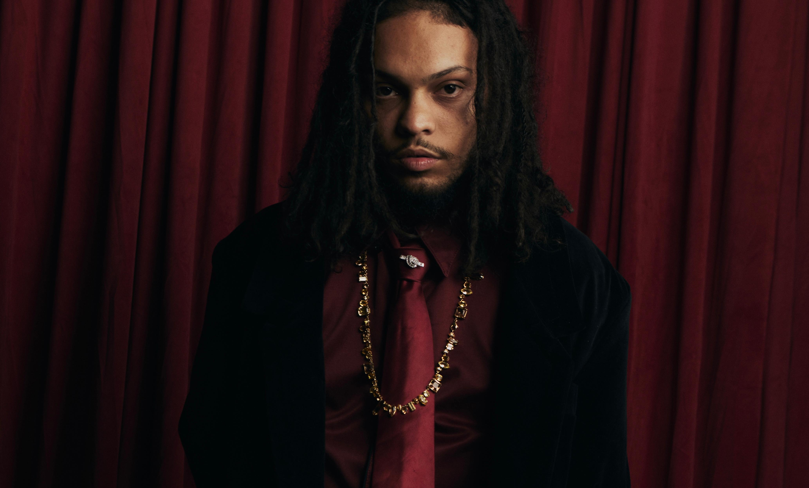

Pedro DDN is a stylist and creative director who began his journey in fashion at the age of 16. With a solid academic background and experience at renowned publications such as GQ magazine, he has established an international career with appearances at Milan and Paris Fashion Weeks. His work is guided by a strategic vision, where imagery serves as a tool for cultural construction and refined aesthetic interpretation.
In addition to his editorial production and cover creation, Pedro is the mentor behind the Originais project, which bridges the gap between fashion and the urban scene while highlighting the professionals who shape contemporary culture. His work is based on the premise that no aesthetic choice is neutral: every selection communicates a position, utilizing concept and creative direction as essential pillars to define authentic and impactful visual narratives.
Personal Stylist | Creative Director | Model | Digital Creator.